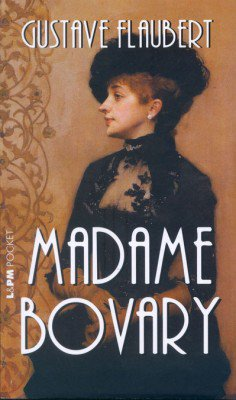

Madame Bovary, roman publié en 1857 relate du destin tragique d'une jeune femme nommée Emma Bovary ?

On peut dire que l'échec est l'état ou la condition qui fait que l'objectif désiré ou prévu n'est pas atteint, et peut être vu comme l'opposé de succès, mais cela peut aussi désigner un sentiment qui surgit lorsque l'on regrette quelque chose, au même titre que le regrêt. Dans son sens le plus général, un échec est une situation qui résulte d'une action n'ayant pas abouti au résultat escompté.
Au fil du roman on assiste à la descente aux enfers de ce personnage qui semble être condamnée a subir l'échec. L'oeuvre de Flaubert relate donc d'échecs sentimentaux, professionnels, financiers. Or, cet échec n'est-il pas uniquement perçu sous le point de vue d'un idéal d'une classe sociale, celui de la bourgeoisie? L'ouvrage de Flaubert, Madame Bovary, est au premier abord l'histoire romanesque de la désillusion. Emma est mariée à Charles Bovary, médecin de campagne. Lui est fou amoureux d'un amour qui ne se démentira jamais tandis qu'elle, aspire à autre chose. Mme Bovary, c'est une vie passée à poursuivre des rêves inaccessibles, à voguer de désillusion en désillusion... Une vie manquée. L'action se situe dans trois petites villes de campagne et évolue parallèlement au statut social des personnages principaux. Charles est médecin et n'est préoccupé que par sa famille et le mirage du grand monde. Emma l'est aussi, mais rêve de faire partie de cette bourgeoisie de province et de trouver l'amour. Elle aura deux amants dont elle sera éperdument amoureuse mais qui finiront par l'abandonner : Léon, clerc de notaire et Rodolphe, riche propriétaire terrien. Malade à l'issue de chaque rupture, elle cultive ses rêves à travers des lectures dont elle se nourrit passionnément durant ses pèriodes de convalescence. Sa vie restera une quête de l'amour, une course effrénée contre le temps, l'époque et la société. Une société qui lui restera fermée, comme une parfaite illusion à laquelle elle n'aura jamais accès, mais qu'elle ne cessera pourtant de côtoyer. Elle finira par se donner la mort, dans un accès de désespoir car éternellement malheureuse et criblée de dettes, laissant un mari qui mourra de chagrin et une enfant orpheline qu'elle n'a jamais vraiment aimée.